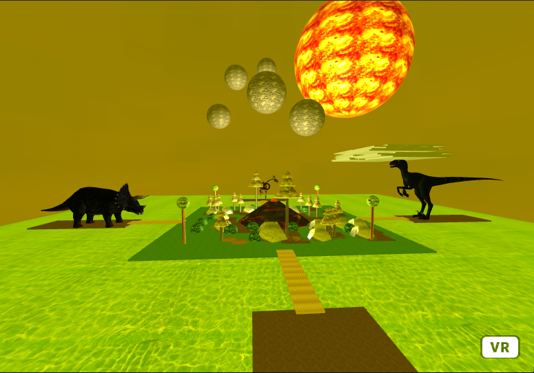
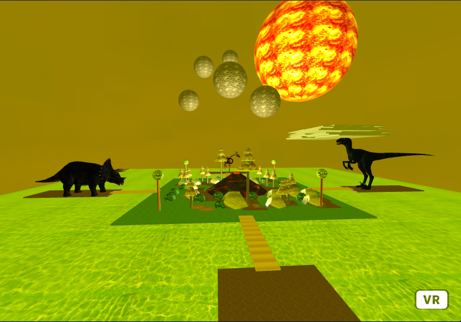

Welcome to my VR world! At first, I just wanted to make a simple VR world. So I decided to make a dinosaur VR world. Afterwards, I got inspired on the VR world I just created and this made me want to improve it over and over.
In the start screen, you can either choose to Play the game or go to Experience Mode or even learn about dinosaurs by going to Information.
In Play game, you have to collect all the dinosaur eggs while enjoying the scenery of trees and flying Pterosaurs.
In Experience Mode, you're free to explore a depiction of the age of dinosaurs. There's clouds moving left and right. When the cursor goes over the rocks or trees they increase in size. When the cursor clicks on the astroids they dispear. When the cursor is on the sun and the user clicks the sun, the sun turns into the moon and the world turns into night.
In Information, you get to see still models of afew dinosaurs. If you hover over the dinosaur models, then the models starts to move in place while also displaying text of information based on which dinosaur the cursor is over on.